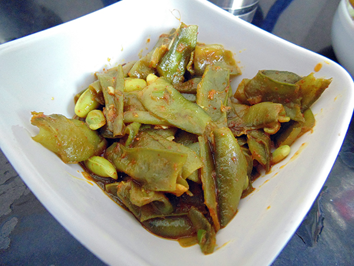

Surti Papdi nu Shaak |
| Rateing |
| prep time:10 minit |
| cook time:20 minit |
| total time:30 minit |
|  |
Ingredients: |
200 gm Surti Papdi
Water according to requirement
For Seasoning
1 tbsp Oil
½ tsp garlic paste
1 tsp Ginger chili paste
1 tsp Red chili powder
¼ tsp turmeric powder
1tsp cumin- coriander powder
Salt to taste
|
Instructions: |
| Wash and cut papdi. Boil it in water by adding salt. Boil till it becomes soft. Drain water from it. Now heat oil in a pan at slow flame. Add garlic, ginger and chili paste. Also add turmeric powder and papdi in it. Stir and cook for 1 minute. Last mix red chili powder and cumin coriander powder in it. Serve with regular dish. |
video: |